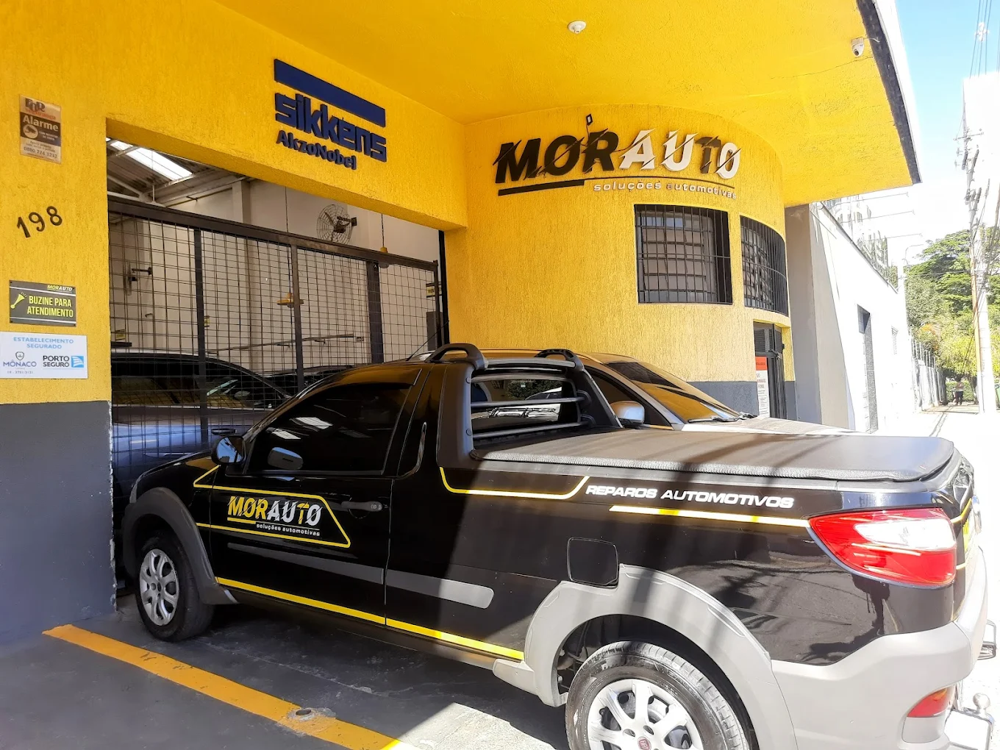
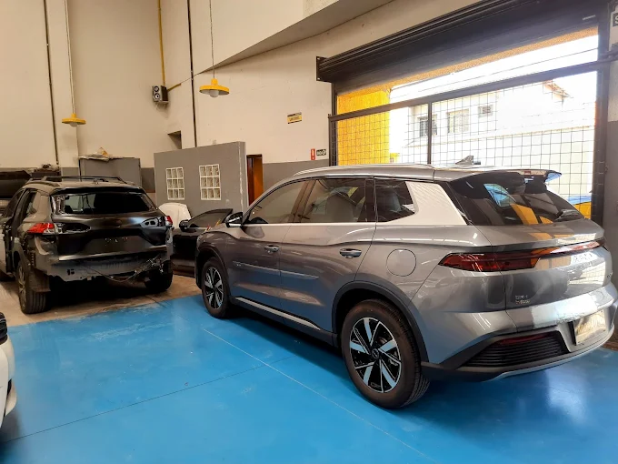
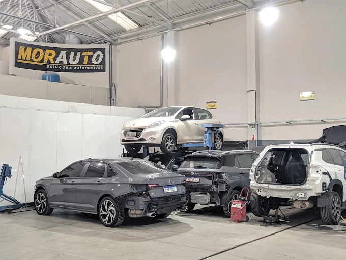
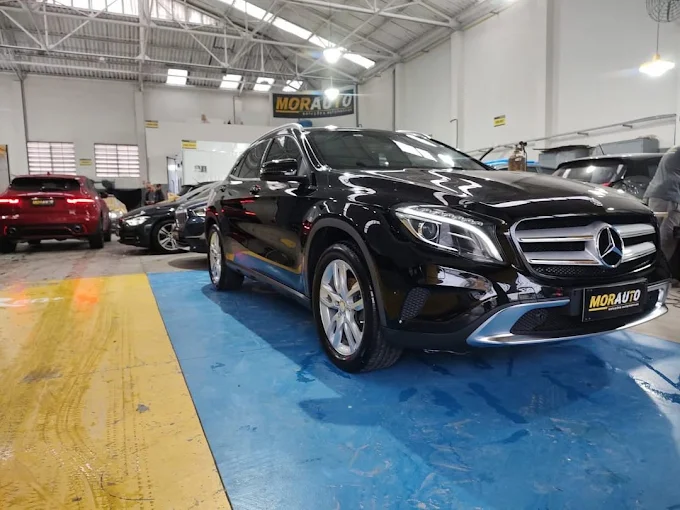

Especialistas em reparos invisíveis, funilaria premium e estética automotiva avançada em Campinas. Atendimento exclusivo, estrutura 100% acessível e laboratório de cores próprio.

Combinamos precisão técnica automotiva com um ambiente moderno, planejado para acolher todos os nossos clientes com o máximo respeito.
Laboratório de tintas próprio com espectrofotômetro e correspondência de cor computadorizada. Garantia de acabamento idêntico ao padrão original de fábrica.
Compromisso real com a perfeição. Somos reconhecidos em Campinas pela qualidade invisível nos reparos de funilaria e acabamento de alto padrão.
Estrutura totalmente planejada com rampa de acesso, vagas exclusivas e ambiente seguro, inclusivo e acolhedor para todos os públicos.
Equipamentos de última geração e mão de obra qualificada para cuidar da estética e da estrutura do seu veículo.
Recuperação de lataria utilizando técnicas avançadas como o martelinho de ouro e estiramento controlado. Garantimos o alinhamento perfeito dos painéis e a integridade estrutural original do carro, eliminando amassados sem deixar vestígios.

Nosso laboratório de tintas próprio utiliza espectrofotômetro digital para fazer a leitura exata da tonalidade da pintura atual do seu veículo. Processo executado em cabine pressurizada de alta tecnologia com secagem infravermelha, garantindo um acabamento livre de impurezas.

Serviços de proteção de alta performance para valorizar e blindar o visual do automóvel. Desde o polimento técnico corretivo para eliminação de hologramas e micro-riscos até a aplicação de vitrificadores cerâmicos com proteção de longa duração.

Veja os bastidores e os resultados dos veículos premium que passaram pelos nossos processos rigorosos de restauração e detalhamento.
Nossa equipe está pronta para avaliar seu veículo com a atenção e a precisão técnica que ele merece.
Rua Dr. Rafael Sáles, 198 — Bonfim, Campinas - SP
Segunda a Sexta: 08h às 18h
Sábados: 08h às 12h
(19) 3243-0797